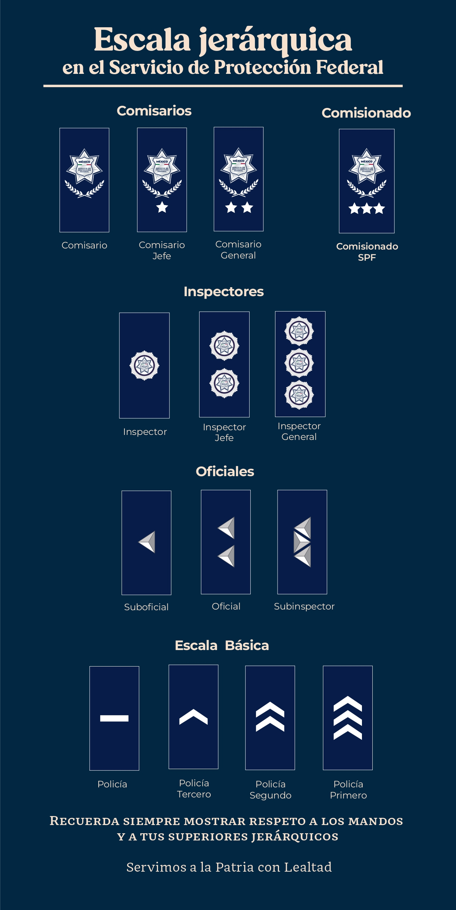

DIVISAS
Las divisas utilizadas por el SPF comprenden condecoraciones, escudos e insignias. Su uso está normado por el Manual de Uniformes y Divisas del Servicio de Protección Federal y tienen por objeto reconocer e identificar:
- I. Nivel jerárquico.
- II. Especialidad.
- III. Condecoraciones.
Las y los integrantes debemos usar y portar los uniformes, únicamente con las divisas autorizadas.
